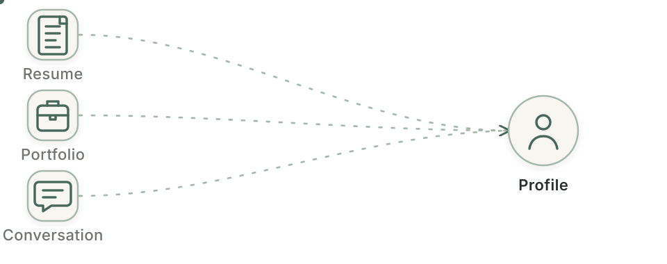
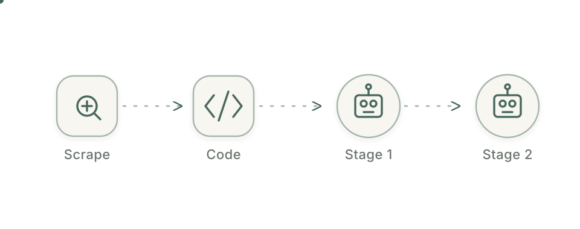
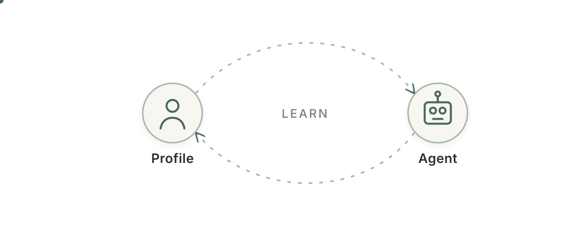
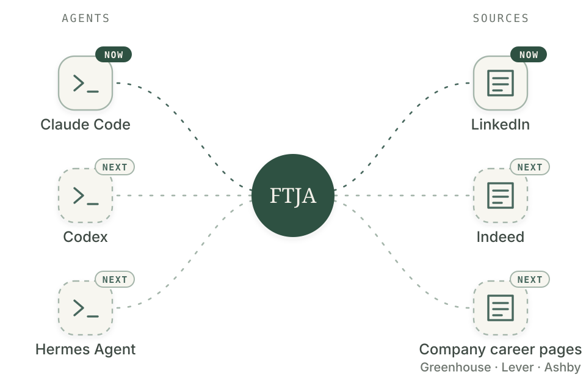
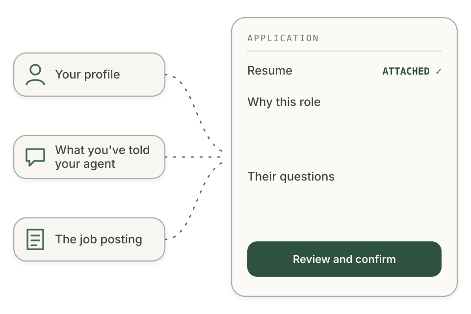

Stop reading every job description yourself.
Give your AI coding agent your background, your standards, and one clear job-search goal. FTJA finds the LinkedIn roles worth your attention — and shows you why.
Open a new Claude Code session
Copy this prompt, paste it into a fresh session, and your agent will handle the rest.
Beta: built and tested with Claude Code on macOS. Codex and other agents come next. Until then, fork it and make it yours.
A job search shaped around your judgment.



Fine-tune your job agent.
Your agent guides you in chat. You decide in the web view: add your background, then review the profile, search settings, and judgment rules behind every run. Your decisions keep shaping the next one.
Twenty seconds of an actual search.
Sped up. One run over four job titles.
Search is the first step.
Three things FTJA is heading toward, in order.
Your agent, more places to look.
FTJA runs in Claude Code and reads LinkedIn today. Next it comes to more agents, including Codex and Hermes Agent, and to more sources: Indeed, and the career pages companies run on Greenhouse, Lever and Ashby.

Applications, drafted for you.
When a role is worth applying to, your agent prepares the application: your resume attached, the motivation written, each question answered. It draws on your profile, on what it has learned from your conversations, and on the job posting itself.
You review it and confirm. Nothing is sent without you.

No one applies. No one posts a job.
Companies get an agent too. It holds what a job post cannot: what the team needs right now, and the preferences nobody publishes. Your agent holds your judgment, taught run after run.
The two agents talk, and each side gets a short, curated list. The right people still meet.
A direction, not a schedule.

See how your agent reaches a decision.
Public sources
FTJA scrapes public LinkedIn listings without a login. LinkedIn controls coverage, so FTJA states that limit plainly.
Each judgment step
See what was scraped, what the filters removed, which evidence matched, and why a role made it through.
Local files. Open code.
Your profile, criteria, run history, and results stay in local files. FTJA is open source, so you can inspect and change the pipeline itself.